El parqueadero Autos Colombia presta el servicio de estacionamiento a clientes que pagan una mensualidad. Hoy la operación diaria (quién entra, a qué celda se asigna, cuánto tiempo permanece y qué novedades se presentan con cada vehículo) se controla de forma manual, lo que dificulta saber en tiempo real qué celdas están disponibles, verificar si un cliente tiene su mensualidad al día y responder ante reclamaciones por daños.
Este documento presenta el análisis, diseño e implementación de la primera iteración del sistema de información, enfocada en la gestión de la entrada y salida de vehículos. El alcance completo del proyecto se divide en tres iteraciones:
| Iteración | Alcance | Estado |
|---|---|---|
| Iteración 1 | Entrada y salida de vehículos, asignación y liberación de celdas, registro de novedades durante la estadía, consulta de vehículos dentro e historial. | Desarrollada (este documento) |
| Iteración 2 | Gestión completa de usuarios (clientes y empleados) y de celdas. | Planeada |
| Iteración 3 | Gestión de pagos de mensualidades. | Planeada |
Para que la iteración 1 pueda operar de punta a punta se incluyó un soporte mínimo de las otras áreas: inicio de sesión con dos roles (administrador y operador), registro básico de vehículos de mensualidad con su periodo vigente y la posibilidad de poner celdas en mantenimiento. Estas funciones se ampliarán en las iteraciones siguientes.
La solución se construyó como una aplicación web en Python 3 con Flask y base de datos SQLite, organizada en una arquitectura por capas (presentación, lógica de negocio y acceso a datos). El documento recorre los nueve entregables solicitados: requerimientos, historias de usuario, arquitectura, mockups, modelos de datos, casos de uso, diagrama de clases, diagrama de paquetes y código fuente.
| Actor | Descripción |
|---|---|
| Operador | Empleado de portería. Registra entradas, salidas y novedades, y consulta el estado del parqueadero. |
| Administrador | Encargado del parqueadero. Puede hacer todo lo del operador y además registrar vehículos de mensualidad y cambiar el estado de las celdas. |
| ID | Nombre | Descripción | Prioridad |
|---|---|---|---|
| RF01 | Autenticar usuario | El sistema debe permitir el ingreso con usuario y contraseña y restringir las opciones según el rol (administrador u operador). | Alta |
| RF02 | Registrar entrada de vehículo | El sistema debe registrar la entrada de un vehículo a partir de su placa, guardando fecha y hora del sistema, la celda asignada y el operador que la registró. | Alta |
| RF03 | Validar placa | El sistema debe validar el formato de placa colombiana: carro ABC123, moto ABC12D, sin importar mayúsculas, espacios o guiones. | Alta |
| RF04 | Validar mensualidad vigente | El sistema solo debe permitir la entrada de vehículos registrados que tengan una mensualidad vigente en la fecha actual. | Alta |
| RF05 | Evitar doble entrada | El sistema no debe permitir registrar la entrada de un vehículo que ya está dentro del parqueadero (entrada sin salida). | Alta |
| RF06 | Asignar celda | El sistema debe asignar automáticamente la primera celda libre correspondiente al tipo de vehículo (carro o moto) o permitir que el operador elija una celda libre compatible; la celda queda en estado OCUPADA. | Alta |
| RF07 | Registrar salida de vehículo | El sistema debe registrar la salida de un vehículo que esté dentro, guardando fecha y hora y el operador, y liberar la celda (estado LIBRE). | Alta |
| RF08 | Calcular tiempo de permanencia | El sistema debe calcular y mostrar el tiempo de permanencia (días, horas y minutos) en el comprobante de salida y en los listados. | Media |
| RF09 | Generar comprobante | El sistema debe mostrar un comprobante de entrada y de salida con placa, vehículo, propietario, celda, fechas, operador y permanencia. | Media |
| RF10 | Registrar novedad | El sistema debe permitir registrar novedades (daño, objeto olvidado, incidente, otro) con descripción sobre un vehículo que se encuentre dentro del parqueadero. | Alta |
| RF11 | Consultar vehículos dentro | El sistema debe listar los vehículos que están dentro con su celda, hora de entrada y tiempo transcurrido. | Media |
| RF12 | Consultar mapa de ocupación | El sistema debe mostrar el mapa de celdas con su estado (libre, ocupada, mantenimiento), la placa que ocupa cada celda e indicadores del día (entradas, salidas, celdas libres). | Media |
| RF13 | Consultar historial | El sistema debe permitir consultar el historial de entradas y salidas filtrando por placa y por fecha. | Media |
| RF14 | Registrar vehículo de mensualidad | El administrador debe poder registrar un vehículo (placa, tipo, marca, color), su propietario y el periodo y valor de la mensualidad. (Soporte para la iteración 1.) | Media |
| RF15 | Cambiar estado de celda | El administrador debe poder poner en mantenimiento o habilitar una celda que no esté ocupada. (Soporte para la iteración 1.) | Baja |
| ID | Tipo | Descripción |
|---|---|---|
| RNF01 | Rendimiento | El registro de una entrada o salida debe completarse en menos de 2 segundos en condiciones normales de operación. |
| RNF02 | Usabilidad | Un operador debe poder registrar una entrada o salida en máximo 3 interacciones (escribir placa, confirmar). Los mensajes de error deben estar en español y explicar la causa. |
| RNF03 | Seguridad | Las contraseñas se almacenan con hash (PBKDF2/scrypt de Werkzeug), nunca en texto plano. Todas las pantallas, salvo el inicio de sesión, requieren sesión activa; las funciones administrativas requieren rol ADMIN. |
| RNF04 | Integridad de datos | La base de datos debe garantizar mediante restricciones (llaves foráneas, CHECK e índices únicos parciales) que un vehículo no tenga dos entradas abiertas y que una celda no tenga dos vehículos. Entrada y ocupación de celda se registran en una sola transacción. |
| RNF05 | Trazabilidad | Toda entrada, salida y novedad debe guardar el usuario que la registró y la fecha y hora. |
| RNF06 | Compatibilidad | La aplicación debe funcionar en navegadores modernos (Chrome, Edge, Firefox) y adaptarse a pantallas desde 1024 px de ancho; en pantallas pequeñas el menú se reorganiza. |
| RNF07 | Mantenibilidad | El código debe organizarse en capas (controladores, servicios, repositorios, modelos) y contar con pruebas automatizadas de las reglas de negocio. |
| RNF08 | Portabilidad | La aplicación debe instalarse con Python 3.10+ y una sola dependencia (Flask), sin servidor de base de datos externo. |
| RNF09 | Disponibilidad | El sistema debe estar disponible durante todo el horario de atención del parqueadero. |
| ID | Regla |
|---|---|
| RN01 | Solo ingresan vehículos registrados con mensualidad vigente (fecha_inicio ≤ hoy ≤ fecha_fin). |
| RN02 | Las celdas son de tipo CARRO o MOTO y solo reciben vehículos de su tipo. |
| RN03 | Una celda en MANTENIMIENTO u OCUPADA no se puede asignar; una celda OCUPADA no se puede poner en mantenimiento. |
| RN04 | Las novedades solo se registran sobre vehículos que están dentro del parqueadero y quedan asociadas a esa estadía. |
Las historias se escriben con el formato Como [rol] quiero [funcionalidad] para [beneficio], con criterios de aceptación verificables. La estimación está en puntos de historia (escala Fibonacci).
Como empleado del parqueadero quiero ingresar con mi usuario y contraseña para que solo personal autorizado opere el sistema.
Como operador quiero registrar la entrada de un vehículo con su placa para llevar el control de quién está dentro y en qué celda.
Como administrador quiero que el sistema rechace ingresos no válidos para no prestar el servicio a vehículos sin mensualidad ni duplicar registros.
Como operador quiero registrar la salida de un vehículo para liberar su celda y conocer cuánto tiempo permaneció.
Como operador quiero registrar novedades sobre un vehículo que está en el parqueadero para dejar evidencia de daños, objetos olvidados o incidentes.
Como operador quiero ver el mapa de celdas y los vehículos que están dentro para saber rápidamente dónde hay espacio y dónde está cada vehículo.
Como administrador quiero consultar el historial de entradas y salidas para atender reclamaciones y revisar la operación.
Como administrador quiero registrar un vehículo, su propietario y el periodo de la mensualidad para que pueda ingresar al parqueadero.
Como administrador quiero poner una celda en mantenimiento o habilitarla para que no se asignen celdas que no se pueden usar.
Se eligió una arquitectura web en capas con patrón MVC (Modelo–Vista–Controlador) complementado con una capa de servicios y el patrón Repositorio. El navegador del equipo de portería se comunica por HTTP con el servidor Flask; cada capa solo conoce a la capa inmediatamente inferior, lo que facilita cambiar la base de datos o la interfaz sin tocar las reglas de negocio.
| Capa | Responsabilidad | Elementos |
|---|---|---|
| Presentación | Recibe las peticiones HTTP, valida la sesión y el rol, invoca los servicios y renderiza las vistas HTML. | controllers/, templates/, static/ |
| Lógica de negocio | Aplica las reglas de negocio (RN01–RN04), coordina repositorios y define las transacciones. | services/ |
| Acceso a datos | Encapsula las consultas SQL de cada tabla y convierte filas en objetos del dominio. | repositories/ |
| Dominio | Entidades del negocio con su comportamiento propio (vigencia, celda libre, permanencia). | models.py |
| Persistencia | Base de datos relacional embebida. | SQLite 3 (db.py) |
Tecnologías: Python 3.13, Flask 3.1 (servidor web, enrutamiento, sesiones), Jinja2 (plantillas), Werkzeug (hash de contraseñas), SQLite 3, HTML5 y CSS3, unittest (pruebas), Git y GitHub (control de versiones).
Los mockups muestran las pantallas asociadas a cada historia de usuario. Corresponden al prototipo funcional de la aplicación, construido con la misma paleta (azul institucional y amarillo de placa) y la misma estructura: menú lateral de operación y configuración, barra superior con el usuario y área de contenido.
docs/img/mockups/.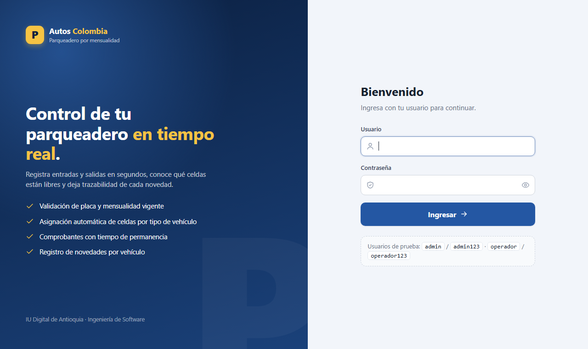
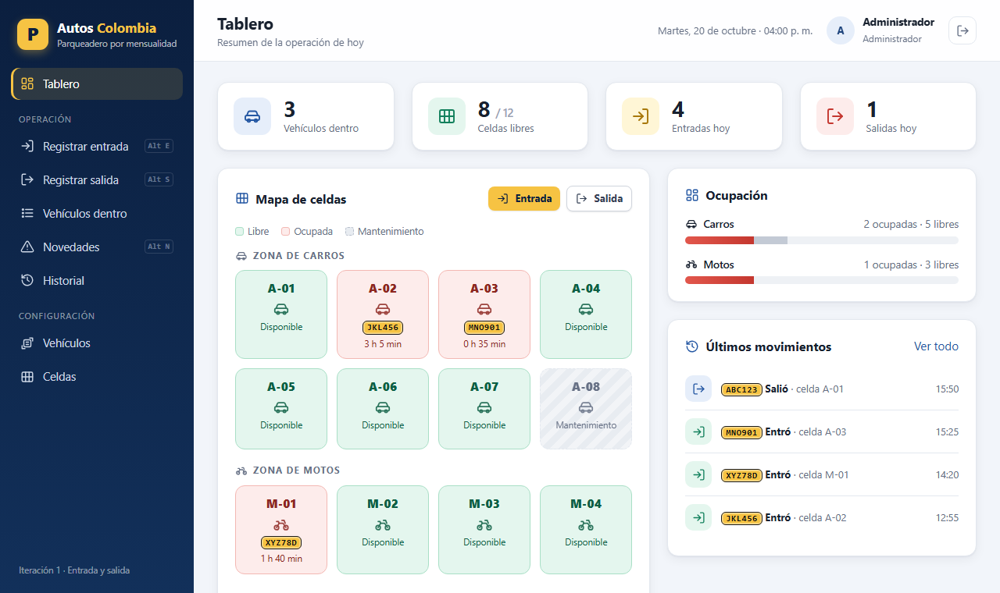
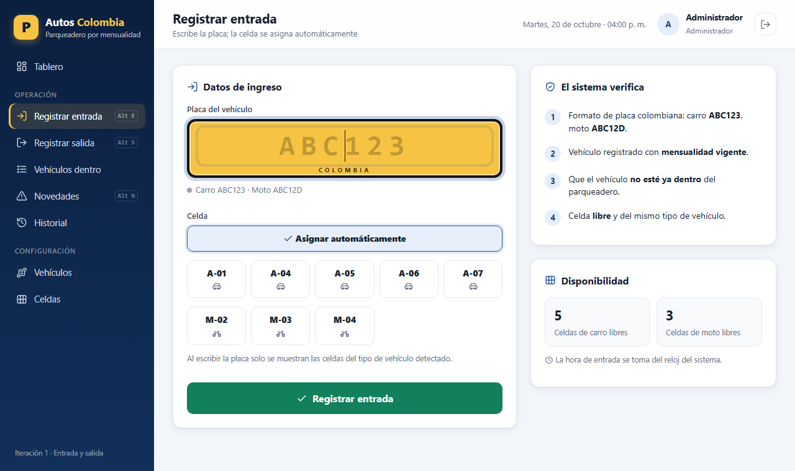
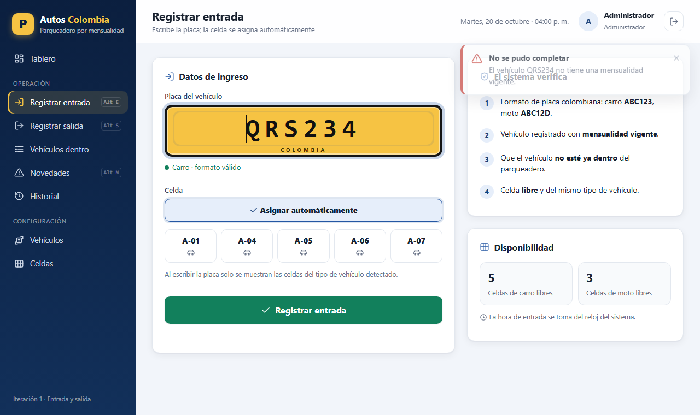
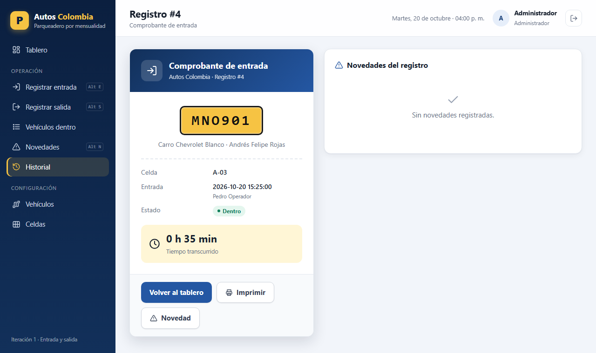
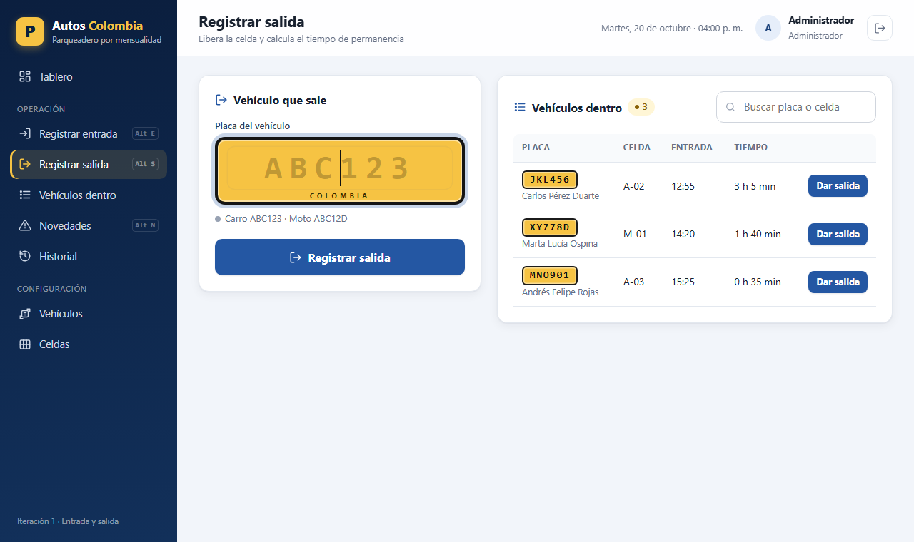
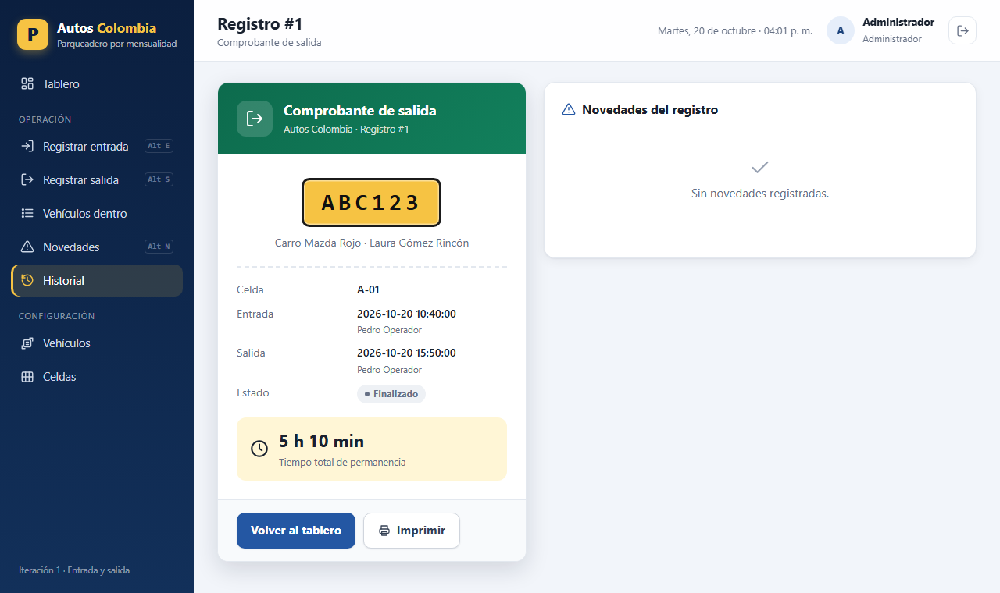
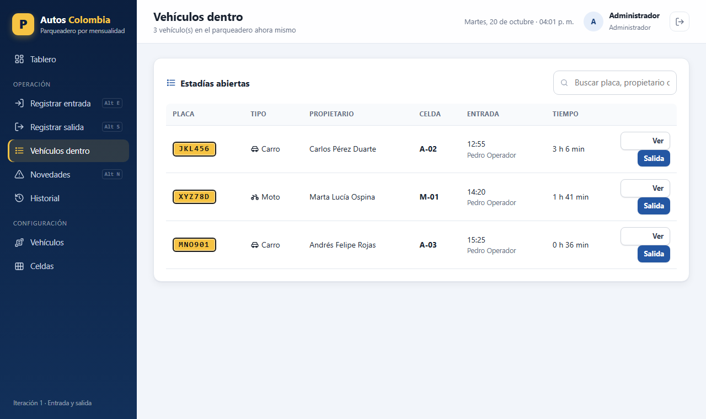
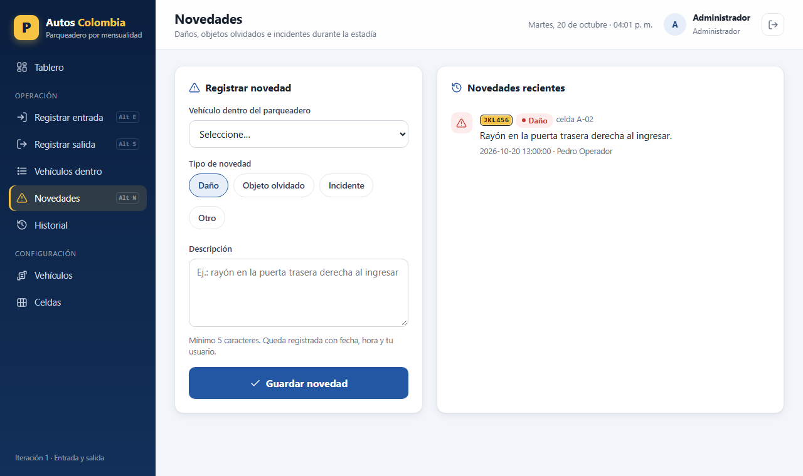
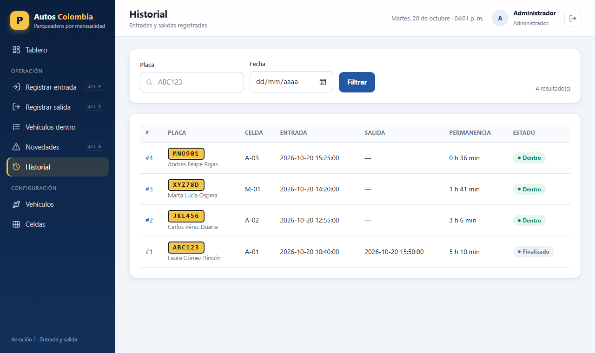
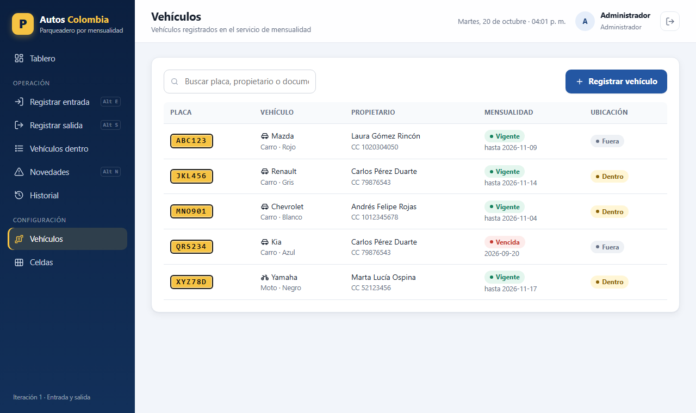
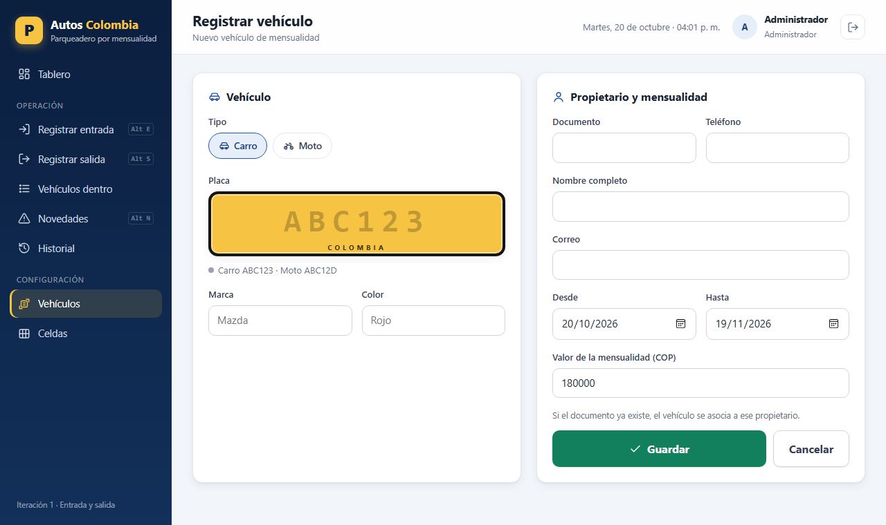
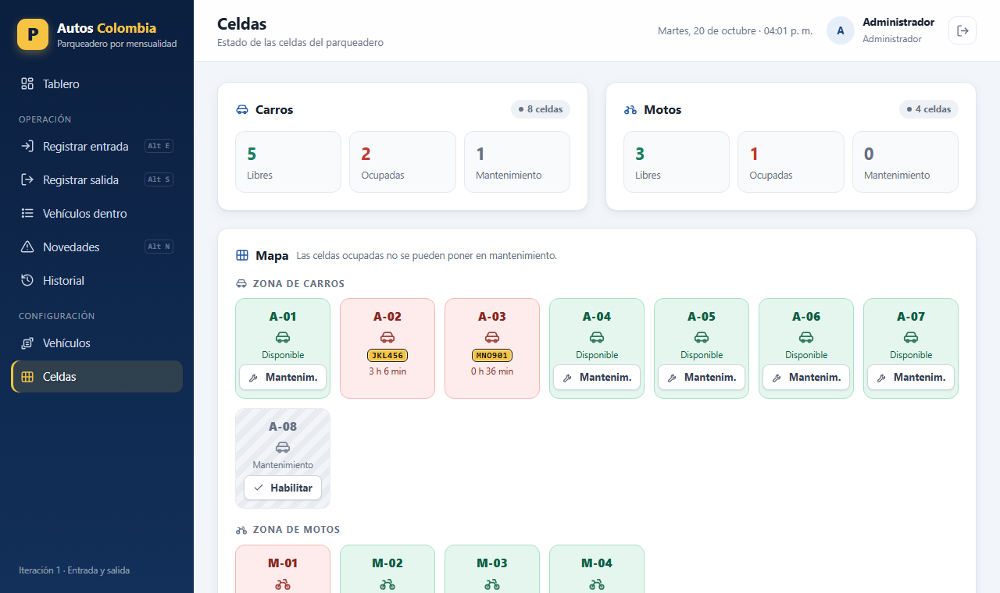
El MER identifica siete entidades. Un CLIENTE posee uno o varios VEHÍCULOS; cada vehículo tiene mensualidades (periodos pagados) y genera REGISTROS_PARQUEO cada vez que ingresa. Cada registro ocupa una CELDA, es registrado por un USUARIO del sistema y puede contener varias NOVEDADES.
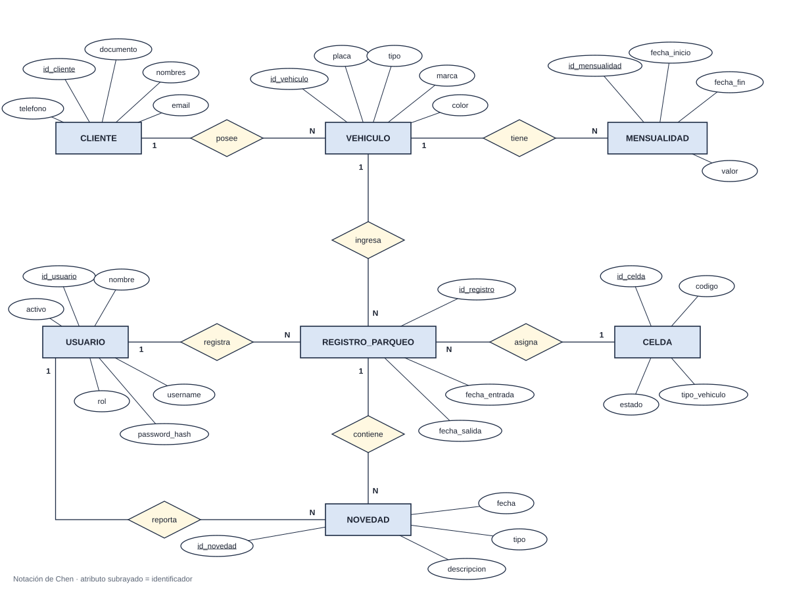
| Relación | Entidades | Cardinalidad | Significado |
|---|---|---|---|
| posee | CLIENTE – VEHÍCULO | 1 : N | Un cliente puede tener varios vehículos en mensualidad. |
| tiene | VEHÍCULO – MENSUALIDAD | 1 : N | Un vehículo acumula un periodo de mensualidad por cada mes contratado. |
| ingresa | VEHÍCULO – REGISTRO_PARQUEO | 1 : N | Cada entrada del vehículo genera un registro. |
| asigna | CELDA – REGISTRO_PARQUEO | 1 : N | Una celda es usada en muchos registros a lo largo del tiempo (uno abierto a la vez). |
| registra | USUARIO – REGISTRO_PARQUEO | 1 : N | El operador que registra la entrada (y la salida). |
| contiene | REGISTRO_PARQUEO – NOVEDAD | 1 : N | Novedades ocurridas durante esa estadía. |
| reporta | USUARIO – NOVEDAD | 1 : N | Usuario que anotó la novedad. |
Cada entidad se transforma en una tabla y cada relación 1:N en una llave foránea del lado N. La relación registra se materializa con dos llaves foráneas (usuario que registra la entrada y usuario que registra la salida). El esquema está en tercera forma normal: los datos del propietario solo se guardan en cliente y los de la celda solo en celda.
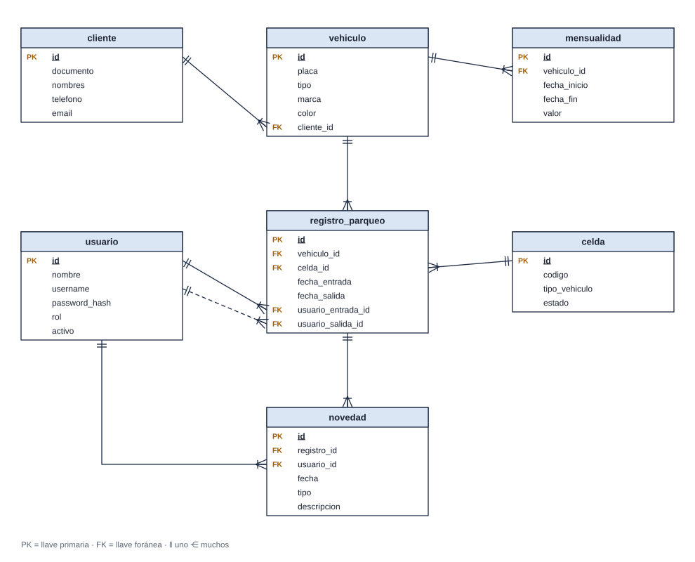
cliente (id, documento, nombres, telefono, email)
vehiculo (id, placa, tipo, marca, color, cliente_id → cliente)
mensualidad (id, vehiculo_id → vehiculo, fecha_inicio, fecha_fin, valor)
usuario (id, nombre, username, password_hash, rol, activo)
celda (id, codigo, tipo_vehiculo, estado)
registro_parqueo (id, vehiculo_id → vehiculo, celda_id → celda, fecha_entrada, fecha_salida,
usuario_entrada_id → usuario, usuario_salida_id → usuario)
novedad (id, registro_id → registro_parqueo, usuario_id → usuario, fecha, tipo, descripcion)
El modelo físico se implementa en SQLite 3. Además de tipos y llaves, incluye restricciones CHECK para dominios (tipo de vehículo, estado de celda, rol, tipo de novedad, fechas coherentes) e índices únicos parciales que impiden a nivel de base de datos que un vehículo tenga dos entradas abiertas o que una celda tenga dos vehículos al mismo tiempo.
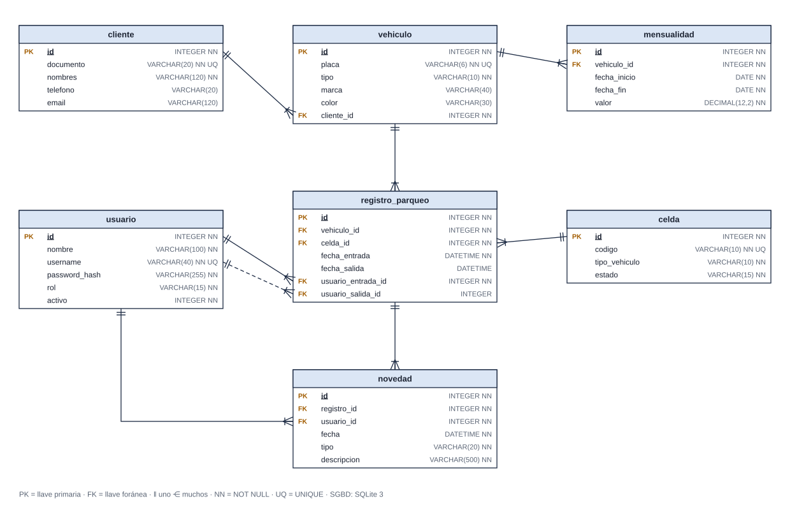
database/schema.sql)PRAGMA foreign_keys = ON;
DROP TABLE IF EXISTS novedad;
DROP TABLE IF EXISTS registro_parqueo;
DROP TABLE IF EXISTS mensualidad;
DROP TABLE IF EXISTS vehiculo;
DROP TABLE IF EXISTS cliente;
DROP TABLE IF EXISTS celda;
DROP TABLE IF EXISTS usuario;
CREATE TABLE usuario (
id INTEGER PRIMARY KEY AUTOINCREMENT,
nombre VARCHAR(100) NOT NULL,
username VARCHAR(40) NOT NULL UNIQUE,
password_hash VARCHAR(255) NOT NULL,
rol VARCHAR(15) NOT NULL CHECK (rol IN ('ADMIN', 'OPERADOR')),
activo INTEGER NOT NULL DEFAULT 1 CHECK (activo IN (0, 1))
);
CREATE TABLE cliente (
id INTEGER PRIMARY KEY AUTOINCREMENT,
documento VARCHAR(20) NOT NULL UNIQUE,
nombres VARCHAR(120) NOT NULL,
telefono VARCHAR(20),
email VARCHAR(120)
);
CREATE TABLE vehiculo (
id INTEGER PRIMARY KEY AUTOINCREMENT,
placa VARCHAR(6) NOT NULL UNIQUE,
tipo VARCHAR(10) NOT NULL CHECK (tipo IN ('CARRO', 'MOTO')),
marca VARCHAR(40),
color VARCHAR(30),
cliente_id INTEGER NOT NULL REFERENCES cliente (id) ON UPDATE CASCADE ON DELETE RESTRICT
);
CREATE TABLE mensualidad (
id INTEGER PRIMARY KEY AUTOINCREMENT,
vehiculo_id INTEGER NOT NULL REFERENCES vehiculo (id) ON DELETE CASCADE,
fecha_inicio DATE NOT NULL,
fecha_fin DATE NOT NULL,
valor DECIMAL(12,2) NOT NULL CHECK (valor >= 0),
CHECK (fecha_fin >= fecha_inicio)
);
CREATE TABLE celda (
id INTEGER PRIMARY KEY AUTOINCREMENT,
codigo VARCHAR(10) NOT NULL UNIQUE,
tipo_vehiculo VARCHAR(10) NOT NULL CHECK (tipo_vehiculo IN ('CARRO', 'MOTO')),
estado VARCHAR(15) NOT NULL DEFAULT 'LIBRE'
CHECK (estado IN ('LIBRE', 'OCUPADA', 'MANTENIMIENTO'))
);
CREATE TABLE registro_parqueo (
id INTEGER PRIMARY KEY AUTOINCREMENT,
vehiculo_id INTEGER NOT NULL REFERENCES vehiculo (id) ON DELETE RESTRICT,
celda_id INTEGER NOT NULL REFERENCES celda (id) ON DELETE RESTRICT,
fecha_entrada DATETIME NOT NULL,
fecha_salida DATETIME,
usuario_entrada_id INTEGER NOT NULL REFERENCES usuario (id),
usuario_salida_id INTEGER REFERENCES usuario (id),
CHECK (fecha_salida IS NULL OR fecha_salida >= fecha_entrada)
);
CREATE UNIQUE INDEX ux_registro_vehiculo_abierto ON registro_parqueo (vehiculo_id) WHERE fecha_salida IS NULL;
CREATE UNIQUE INDEX ux_registro_celda_abierta ON registro_parqueo (celda_id) WHERE fecha_salida IS NULL;
CREATE INDEX ix_registro_fecha_entrada ON registro_parqueo (fecha_entrada);
CREATE TABLE novedad (
id INTEGER PRIMARY KEY AUTOINCREMENT,
registro_id INTEGER NOT NULL REFERENCES registro_parqueo (id) ON DELETE CASCADE,
usuario_id INTEGER NOT NULL REFERENCES usuario (id),
fecha DATETIME NOT NULL,
tipo VARCHAR(20) NOT NULL CHECK (tipo IN ('DANO', 'OBJETO', 'INCIDENTE', 'OTRO')),
descripcion VARCHAR(500) NOT NULL
);
El administrador hereda todos los casos de uso del operador (generalización) y además registra vehículos y cambia el estado de las celdas. Registrar entrada incluye la validación y la asignación de celda; registrar salida incluye liberar la celda y calcular la permanencia.
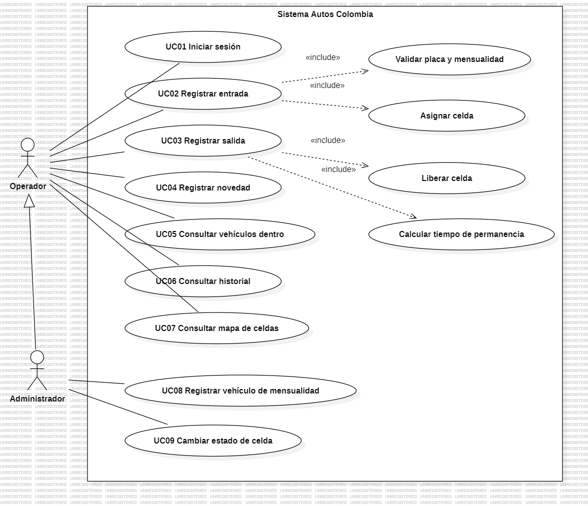
| Actor | Operador (o Administrador) |
|---|---|
| Precondición | El usuario inició sesión. |
| Flujo principal | 1. El operador abre “Registrar entrada”. 2. Escribe la placa y, opcionalmente, elige una celda. 3. El sistema normaliza y valida la placa (RF03). 4. Verifica que el vehículo esté registrado y con mensualidad vigente (RF04). 5. Verifica que no tenga una entrada abierta (RF05). 6. Asigna la celda libre compatible (RF06). 7. Guarda el registro y marca la celda como OCUPADA en una transacción. 8. Muestra el comprobante de entrada. |
| Flujos alternos | 3a. Formato inválido → mensaje con el formato esperado. 4a. Vehículo no registrado o mensualidad vencida → mensaje y no se registra. 5a. Vehículo ya dentro → mensaje. 6a. Sin celdas libres o celda incompatible → mensaje. |
| Postcondición | Existe un registro abierto para el vehículo y la celda queda OCUPADA. |
| Actor | Operador (o Administrador) |
|---|---|
| Precondición | El usuario inició sesión y el vehículo está dentro. |
| Flujo principal | 1. El operador escribe la placa o pulsa “Dar salida” en la lista. 2. El sistema busca el registro abierto del vehículo. 3. Guarda la fecha y hora de salida y el usuario, y deja la celda LIBRE en una transacción. 4. Calcula la permanencia y muestra el comprobante de salida con las novedades. |
| Flujos alternos | 2a. El vehículo no está dentro → mensaje “no se encuentra dentro del parqueadero”. |
| Postcondición | El registro queda cerrado y la celda disponible. |
Las clases del dominio corresponden a models.py. RegistroParqueo es la clase central: une vehículo, celda y usuario, y se compone de novedades (composición: si se elimina el registro, se eliminan sus novedades). ParqueoService concentra las operaciones de la iteración y usa los repositorios para leer y escribir las entidades.
El paquete autoscolombia agrupa los subpaquetes por capa. Las dependencias van siempre hacia abajo: controllers usa services, services usa repositories y models; ningún paquete inferior depende de uno superior. El paquete tests depende de la aplicación para probarla.
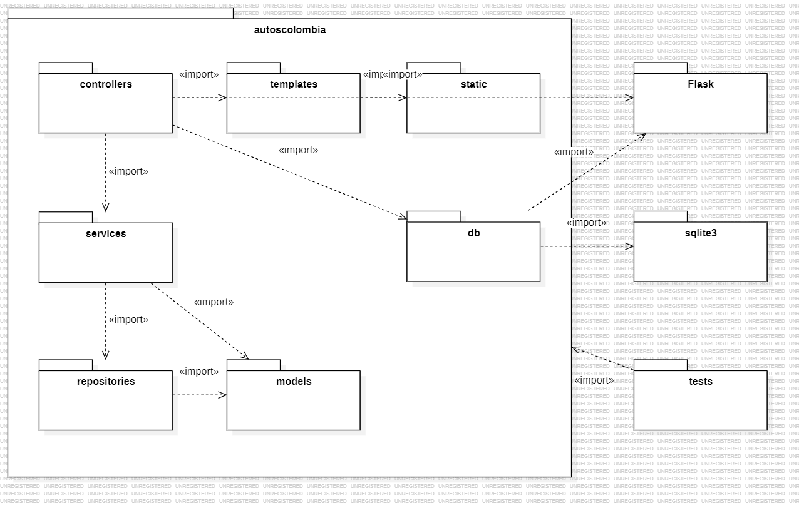
| Paquete | Contenido |
|---|---|
| controllers | auth_controller (login, roles), parqueo_controller (tablero, entrada, salida, comprobante, activos, historial, novedades), vehiculo_controller, celda_controller. |
| services | ParqueoService, VehiculoService, AuthService, ReglaNegocioError. |
| repositories | Un repositorio por tabla: Usuario, Cliente, Vehiculo, Mensualidad, Celda, Registro, Novedad. |
| models | Entidades del dominio (dataclasses). |
| db | Conexión SQLite, creación del esquema y datos iniciales; comando flask init-db. |
| templates / static | Vistas Jinja2 y hoja de estilos. |
Repositorio GitHub: https://github.com/Santiago071007/Iteraci-n-1
autos-colombia/ ├── app.py punto de entrada ├── requirements.txt dependencias (Flask) ├── autoscolombia/ │ ├── __init__.py fábrica de la aplicación (create_app) │ ├── db.py conexión e inicialización de SQLite │ ├── models.py entidades del dominio │ ├── controllers/ capa de presentación (Blueprints) │ ├── services/ lógica de negocio │ ├── repositories/ acceso a datos │ ├── templates/ vistas Jinja2 │ └── static/css/app.css estilos ├── database/ │ ├── schema.sql modelo físico (DDL) │ └── seed.sql datos de ejemplo ├── tests/test_parqueo.py pruebas automatizadas └── docs/ informe, diagramas y mockups
python -m venv .venv .venv\Scripts\activate (Windows) | source .venv/bin/activate (Linux/Mac) pip install -r requirements.txt flask --app app run → abrir http://127.0.0.1:5000 Usuarios de prueba: admin / admin123 · operador / operador123
La base de datos se crea automáticamente con datos de ejemplo la primera vez (en instance/). Para reiniciarla: flask --app app init-db. Los datos de ejemplo incluyen cinco vehículos, uno de ellos (QRS234) con mensualidad vencida para demostrar la validación, y doce celdas (ocho de carro, una en mantenimiento, y cuatro de moto).
services/parqueo_service.py) def registrar_entrada(
self, placa: str, usuario_id: int, celda_id: Optional[int] = None, ahora: Optional[datetime] = None
) -> RegistroParqueo:
ahora = ahora or datetime.now()
placa = normalizar_placa(placa)
validar_placa(placa)
vehiculo = self.vehiculos.buscar_por_placa(placa)
if not vehiculo:
raise ReglaNegocioError(f"El vehículo {placa} no está registrado como mensualidad.")
if not self.mensualidades.vigente(vehiculo.id, ahora.date()):
raise ReglaNegocioError(f"El vehículo {placa} no tiene una mensualidad vigente.")
if self.registros.abierto_por_vehiculo(vehiculo.id):
raise ReglaNegocioError(f"El vehículo {placa} ya se encuentra dentro del parqueadero.")
if celda_id:
celda = self.celdas.obtener(celda_id)
if not celda or not celda.esta_libre():
raise ReglaNegocioError("La celda seleccionada no está disponible.")
if celda.tipo_vehiculo != vehiculo.tipo:
raise ReglaNegocioError(f"La celda {celda.codigo} no corresponde a un vehículo tipo {vehiculo.tipo}.")
else:
libres = self.celdas.libres(vehiculo.tipo)
if not libres:
raise ReglaNegocioError(f"No hay celdas libres para vehículos tipo {vehiculo.tipo}.")
celda = libres[0]
with self.db:
registro_id = self.registros.crear_entrada(
vehiculo.id, celda.id, ahora.strftime(FORMATO_FECHA_HORA), usuario_id
)
self.celdas.cambiar_estado(celda.id, "OCUPADA")
return self.registros.obtener(registro_id)
El proyecto incluye 15 pruebas (python -m unittest discover -s tests -t .) que verifican las reglas de negocio y el flujo web: asignación de celda por tipo, rechazo de doble entrada, placa inválida, vehículo no registrado, mensualidad vencida, celda ocupada o incompatible, falta de celdas, cálculo de permanencia y liberación de celda en la salida, novedades solo para vehículos dentro, registro de vehículos, protección de rutas por sesión y por rol. Resultado de la última ejecución: 15 pruebas, resultado OK.
La primera iteración entrega un sistema funcional que reemplaza el control manual de entradas y salidas: el operador registra un movimiento con solo escribir la placa, el sistema asigna la celda y deja trazabilidad de quién, cuándo y dónde.
Trasladar las reglas de negocio (mensualidad vigente, celda compatible, una sola entrada abierta) tanto a la capa de servicios como a restricciones de la base de datos protege la integridad de la información incluso ante errores de programación o accesos concurrentes.
La arquitectura en capas con repositorios y servicios permitió probar las reglas de negocio de forma aislada y deja el sistema preparado para las iteraciones 2 (usuarios y celdas) y 3 (pagos): el modelo de datos ya contempla clientes, celdas y mensualidades, por lo que estas iteraciones amplían funcionalidad sin rediseñar lo construido.
Partir de requerimientos, historias de usuario con criterios de aceptación y modelos UML/ER antes de programar hizo que el código fuera trazable: cada pantalla corresponde a una historia, cada historia a requerimientos y cada regla a una prueba automatizada.
El registro de novedades asociado a cada estadía da al parqueadero evidencia con fecha, hora y responsable para atender reclamaciones de los clientes.